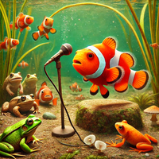

Puddles the Clownfish: The Stand-Up Sensation of an Idaho Panhandle Pond
Posted on Tue 11 February 2025 in Fish

Continue reading
Puddles the Clownfish was not supposed to be in an Idaho pond. Neither was he supposed to be the most celebrated stand-up comedian in local fish history. And yet, here he is. Goldfish Steve keeps forgetting the punchlines. Come for the fish jokes. Stay because Puddles literally can’t leave. 😂🐟🔗
Continue reading